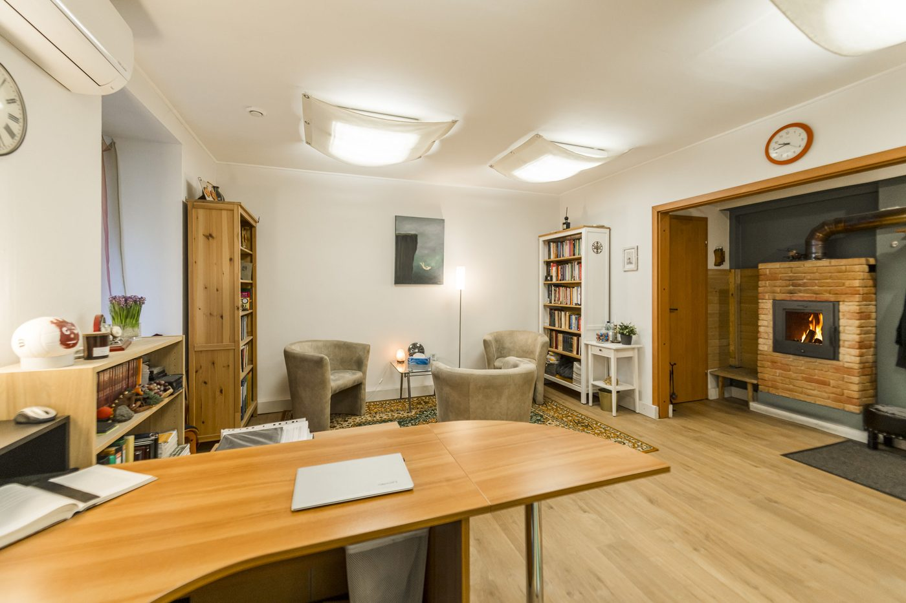

Psihoterapija · Eksistenciālā terapija · Konsultācijas
Ja kaut kas jums traucē pilnvērtīgi un aktīvi dzīvot, tad to var apzināt, izzināt, iepazīt, pārdzīvot, pieņemt vai mainīt.
Juris Zuitiņš - psihologs un psihoterapijas speciālists
Sveiki!
Esmu psihologs un psihoterapijas speciālists. Piedāvāju psihologa konsultācijas, psihoterapiju un eksistenciālo terapiju.
Ir daudz mītu par psiholoģiju un psihoterapiju. Taču skaidrs ir viens - tās palīdz mums tikt galā ar grūtībām, kuras neizbēgami sastopam dzīves laikā.
Iespēja saņemt nedalītu speciālista uzmanību, lai kopīgi paskatītos uz savu dzīvi un pasaules redzējumu - un atrastu, kā un ko mainīt, lai uzlabotu dzīves kvalitāti.
Lasīt vairāk →Konkrētas situācijas analīze un iespējamo risinājumu meklējumi. Parasti ap desmit konsultāciju reizēm - atbildes uz jautājumiem «Ko darīt?» un «Kā rīkoties?».
Lasīt vairāk →Mans skatījums
Bieži sastopos ar uzskatu, ka visu dziedē laiks… Vai visu? Vai mums ir tik daudz laika, lai vienkārši gaidītu, ka tas mūsu vietā kaut ko atrisinās? Un vai vispār kāds vai kaut kas var mūsu vietā kaut ko mainīt? Apstākļus var, bet vai dzīve ir apstākļi?
Es pieturos pie viedokļa, ka katrs pats ir atbildīgs par savu dzīvi. Katram no mums ir iespēja izvēlēties, kādu dzīvi dzīvot un kā to dzīvot. Mums ir uzlikti ierobežojumi, kurus pārkāpt nav cilvēka spēkos. Taču šo robežu ietvaros mums ir izvēle. Mums ir brīvība un līdz ar to atbildība par to, ko mēs ar šo brīvību darām.
Manuprāt, dzīves vērtējuma atskaites sistēma ir cilvēkam dotās iespējas. Var salīdzināt: kā mēs dzīvojam un kā šajos pašos apstākļos varētu vai gribētu dzīvot.

Es nesaku, ka var atrisināt visas dzīves grūtības. Es saku, ka var atrisināt daudzas, ļoti daudzas grūtības - tikai ir jārisina.
Sazināties ar mani